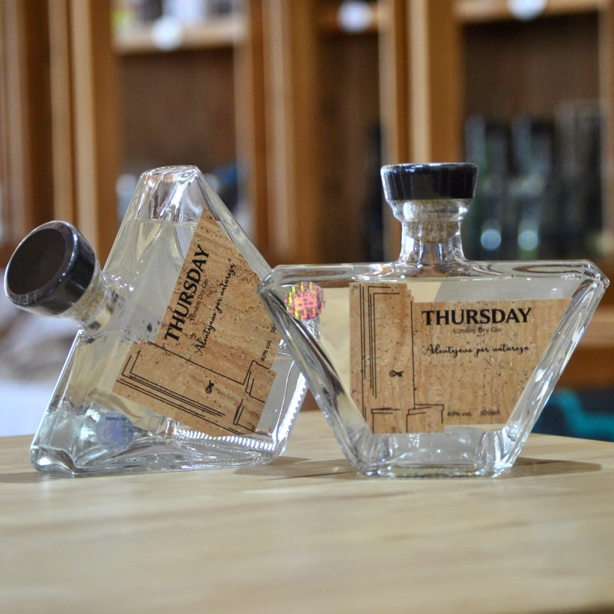
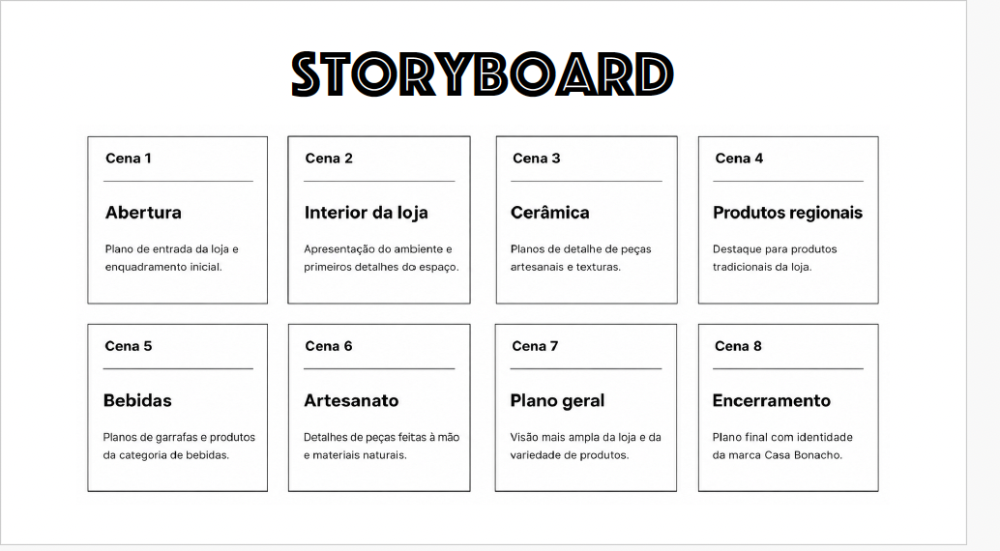

Casa Bonacho — Promotional Video
Concept
Casa Bonacho — Promotional Video is a short audiovisual project created to promote a local store dedicated to handmade and regional products from Alentejo. Instead of presenting each product individually, the video explores textures, flavours, materials and traditions, communicating the cultural identity of the region through a sensory visual narrative.
Objective
The project aims to present Casa Bonacho as a meeting point between tradition and contemporaneity, highlighting the value of handmade work, regional products and local identity.
Visual Approach
The video uses close-up shots of ceramic pieces, wines, baskets and other regional products. The editing follows the rhythm of the music, creating a short, dynamic and product-focused promotional piece.
Target Audience
National and international tourists, consumers interested in handmade products, and people who value tradition, local production and cultural authenticity.

